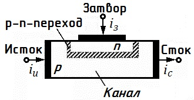
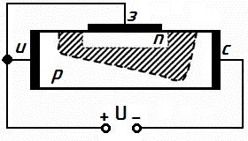
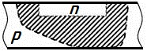
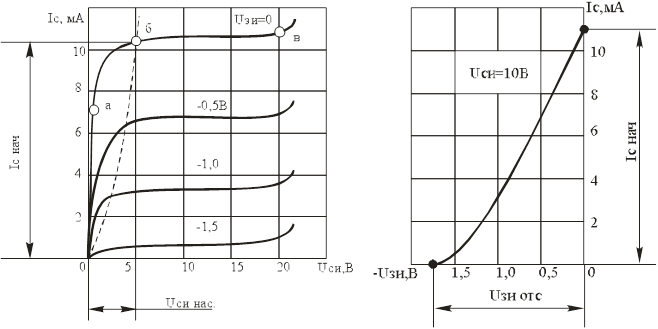
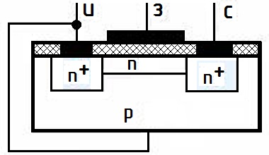
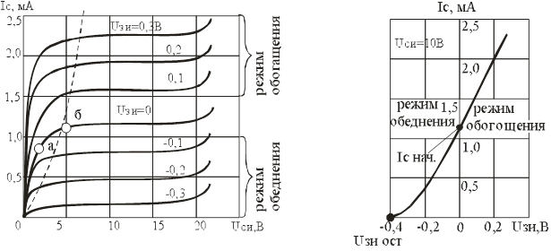
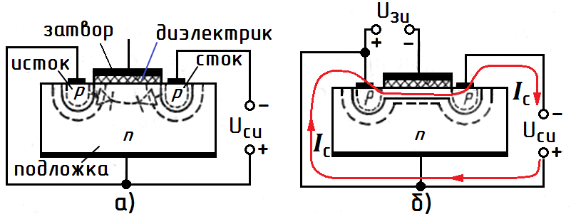
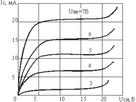
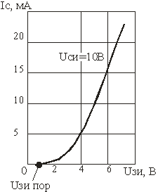

Полевые транзисторы
Полевыми транзисторами называют активные полупроводниковые приборы, обычно с тремя выводами, в которых выходным током управляют с помощью электрического поля.
Особенность полевых транзисторов — управление выходным током происходит посредством изменения приложенного электрического поля, т.е. напряжения. А вот у биполярных транзисторов выходным током управляет входной ток базы.
Другое название полевых транзисторов — униполярные. Это значит, что в процессе протекания тока у них участвует только один вид носителей заряда (или электроны, или дырки).
Выводы полевых транзисторов имеют определенные названия:
- исток — источник носителей тока,
- затвор — управляющий электрод,
- сток — электрод, куда стекают носители.
Различают полевые транзисторы с управляющим p-n переходом и с изолированным затвором.
Полевой транзистор с управляющим p-n-переходом

Рис. 1 - Устройство полевого транзистора с управляющим p-n-переходом
В основе полевого транзистора с управляющим p-n-переходом лежит пластинка из полупроводника (например, p-типа, рис. 1). На противополжных концах она имеет электроды, подав напряжение на которые мы получим ток от истока к стоку. Сверху на этой пластинке есть область с противоположным типом проводимости, к которой подключен затвор. Между затвором и p-областью под ним (каналом) возникает p-n переход. Так как толщина n-слоя значительно меньше канала, то большая часть обедненной подвижными носителями заряда области перехода будет приходиться на p-слой.
Если на переход подадим напряжение обратного смещения (рис. 2), то, закрываясь, он значительно увеличит сопротивление канала и уменьшит ток между истоком и стоком. Таким образом, происходит регулирование выходного тока транзистора с помощью напряжения (электрического поля) затвора.
Можно провести следующую аналогию: p-n переход — это плотина, перекрывающая поток носителей заряда от истока к стоку. Увеличивая или уменьшая на нем обратное напряжение, мы открываем/закрываем на ней шлюзы, регулируя «подачу воды» (выходной ток).

Рис. 2 - Принцип действия полевого транзистора с управляющим p-n-переходом
В рабочем режиме полевого транзистора с управляющим p-n переходом напряжение на затворе должно быть либо нулевым (канал открыт полностью), либо обратным.
Если величина обратного напряжения станет настолько большой, что запирающий слой закроет канал, то транзистор перейдет в режим отсечки (рис. 3).

Рис. 3 - Режим отсечки полевого транзистора с управляющим p-n-переходом
Даже при нулевом напряжении на затворе, между затвором и стоком существует обратное напряжение, равное напряжению исток-сток. Вот почему p-n переход имеет такую неровную форму, расширяясь к области стока. Само собой разумеется, что можно сделать транзистор с каналом n-типа и затвором p-типа. Сущность его работы при этом не изменится.
На рис. 4 приведены статические характеристики полевого транзистора с управляющим p-n-переходом. Статическими их называют потому, что на затвор подается постоянное напряжение.

Рис. 4 - Статические характеристики полевого транзистора с управляющим p-n-переходом
Слева - стоковая, справа - стоко-затворная
Выходной (стоковой) называется зависимость тока стока от напряжения исток-сток при постоянном напряжении затвор-исток.
На графике можно выделить три области:
- Область резкого возрастания тока стока. Это так называемая «омическая» область. Канал «исток-сток» ведет себя как резистор, чье сопротивление управляется напряжением на затворе транзистора.
- Область насыщения. Она имеет почти линейный вид. Здесь происходит перекрытие канала в области стока, которое увеличивается при дальнейшем росте напряжения исток-сток. Соответственно, растет и сопротивление канала, а стоковый ток меняется очень слабо. Именно этот участок характеристики используют в усилительной технике, поскольку здесь наименьшие нелинейные искажения сигналов и оптимальные значения малосигнальных параметров, существенных для усиления. К таким параметрам относятся крутизна характеристики, внутреннее сопротивление и коэффициент усиления. Значения всех этих непонятных словосочетаний будут раскрыты ниже.
- Область пробоя.
Стоко-затворная характеристика показывает зависимость тока стока от напряжения затвор-исток при постоянном напряжении между истоком и стоком. И именно ее крутизна является одним из основных параметров полевого транзистора.
Полевой транзистор с изолированным затвором
Полевые транзисторы с изолированным затвором часто называют МДП-транзисторами (металл-диэлектрик-полупроводник), МОП-транзисторами (металл-оксид-полупроводник), MOSFET-транзисторами (англ. metall-oxide-semiconductor field effect transistor). У таких устройств затвор отделен от канала тонким слоем диэлектрика. Физической основой их работы является эффект изменения проводимости приповерхностного слоя полупроводника на границе с диэлектриком под воздействием поперечного электрического поля.
МДП-транзисторы могут быть с индуцированным и со встроенным каналами (рис. 5).

Рис. 5 - Структура МДП-транзистора со встроенным каналом
Рассмотрим устройство МДП-транзистор со встроенным каналом (рис. 5). Есть подложка из полупроводника с p-проводимостью, в которой сделаны две сильно легированные области с n-проводимостью (исток и сток). Между ними пролегает узкая приповерхностнаяя перемычка, проводимость которой также n-типа. Над ней на поверхности пластины имеется тонкий слой диэлектрика (чаще всего из диоксида кремния). Отсюда аббревиатура МОП. А уже на этом слое и расположен затвор — тонкая металлическая пленка. Сам кристалл обычно соединен с истоком, хотя бывает, что его подключают и отдельно.
Если при нулевом напряжении на затворе подать напряжение исток-сток, то по каналу между ними потечет ток. Почему не через кристалл? Потому что один из p-n переходов будет закрыт.
А теперь подадим на затвор отрицательное относительно истока напряжение. Возникшее поперечное электрическое поле «вытолкнет» электроны из канала в подложку. Соответственно, возрастет сопротивление канала и уменьшится текущий через него ток. Такой режим, при котором с возрастанием напряжения на затворе выходной ток падает, называют режимом обеднения.
Если же мы подадим на затвор напряжение, которое будет способствовать возникновению «помогающего» электронам поля «приходить» в канал из подложки, то транзистор будет работать в режиме обогащения. При этом сопротивление канала будет падать, а ток через него расти.
Рассмотренная выше конструкция транзистора с изолированным затвором похожа на конструкцию с управляющим p-n переходом тем, что даже при нулевом токе на затворе при ненулевом напряжении исток-сток между ними существует так называемый начальный ток стока. В обоих случаях это происходит из-за того, что канал для этого тока встроен в конструкцию транзистора.

Рис. 6 - Семейство стоковых и стоко-затворная характеристики транзистора с встроенным каналом
У транзистор с индуцированным (инверсным) каналом (рис. 7) канал между сильнолегированными областями стока и истока появляется только при подаче на затвор напряжения определенной полярности.

Рис. 7 - Структура (а) и схема подключения (б) МДП-транзистора с индуцированным каналом
Итак, мы подаем напряжение только на исток и сток. Ток между ними течь не будет, поскольку один из p-n переходов между ними и подложкой закрыт.
Подадим на затвор (прямое относительно истока) напряжение. Возникшее электрическое поле «потянет» электроны из сильнолегированных областей в подложку в направлении затвора. И по достижении напряжением на затворе определенного значения в приповерхностной зоне произойдет так называемая инверсия типа проводимости. Т.е. концентрация электронов превысит концентрацию дырок, и между стоком и истоком возникнет тонкий канал n-типа. Транзистор начнет проводить ток, тем сильнее, чем выше напряжение на затворе.
Из такой его конструкции понятно, что работать транзистор с индуцированным каналом может только находясь в режиме обогащения. Поэтому они часто встречаются в устройствах переключения.


Рис. 8 - Семейство стоковых и стоко-затворная характеристики транзистора с идуцированным каналом
Условные графические обозначения полевых транзисторов
В таблице 1 приведены графические обозначения полевых транзисторов.
Таблица 1
 |
Транзистор полевой с управляющим p-n-переходом и каналом n-типа (з - затвор, с - сток, и - исток) |
 |
Транзистор полевой с управляющим p-n-переходом и каналом p-типа |
 |
Транзистор полевой МДП со встроенным каналом n-типа с выводом от подложки (п - подложка) |
 |
Транзистор полевой МДП со встроенным каналом р-типа с выводом от подложки |
 |
Транзистор полевой с индуцированным каналом n-типа с выводом от подложки |
 |
Транзистор полевой с индуцированным каналом р-типа с выводом от подложки |
Основные параметры полевых транзисторов
- Максимальный ток стока при фиксированном напряжении затвор-исток.
- Максимальное напряжение сток-исток — напряжение сток-исток после которого уже наступает пробой.
- Внутреннее (выходное) сопротивление — представляет собой сопротивление канала для переменного тока (напряжение затвор-исток — константа).
- Крутизна стоко-затворной характеристики. Чем она больше, тем «острее» реакция транзистора на изменение напряжения на затворе.
- Входное сопротивление — определяется сопротивлением обратно смещенного p-n перехода и обычно достигает единиц и десятков МОм. Первенство принадлежит устройствам с изолированным затвором.
- Коэффициент усиления — отношение изменения напряжения исток-сток к изменению напряжения затвор-исток при постоянном токе стока.
Отличия полевых транзисторов от биполярных.
Области применения
Первое и главное отличие этих двух видов транзисторов в том, что вторые управляются с помощью изменения тока, а первые — напряжения. И из этого следуют прочие преимущества полевых транзисторов по сравнению с биполярными:
- высокое входное сопротивление по постоянному току и на высокой частоте, отсюда и малые потери на управление;
- высокое быстродействие (благодаря отсутствию накопления и рассасывания неосновных носителей);
- поскольку усилительные свойства полевых транзисторов обусловлены переносом основных носителей заряда, их верхняя граница эффективного усиления выше, чем у биполярных;
- высокая температурная стабильность;
- малый уровень шумов, так как в полевых транзисторах не используется явление инжекции неосновных носителей заряда, которое и делает биполярные транзисторы «шумными»;
- малое потребление мощности.
Однако, привсем при этом у полевых транзисторов есть и недостаток — они «боятся» статического электричества, поэтому при работе с ними предъявляют особо жесткие требования по защите.
Полевые транзисторы применяются в цифровых и аналоговых интегральных схемах, следящих и логических устройствах, энергосберегающих схемах, флеш-памяти.
Источники:
geektimes.ru - Полевые транзисторы
electrik.info - Полевые транзисторы: принцип действия, схемы, режимы работы и моделирование